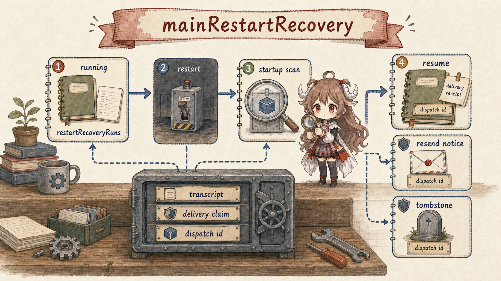

想象一个值班 Agent：每半小时看一次有没有值得提醒的事；工作日上午七点生成日报；收到构建事件时启动隔离分析；长任务完成后马上通知；Gateway 升级重启时继续未完成对话。把这些需求都塞进一个“while true + sleep”，会立刻碰到四个问题：错过的 tick 是否补跑，运行记录放哪里，外部消息是否重复发送，进程中断后谁判断上一次做到哪一步。
OpenClaw 的答案是分开 clock、work、ledger、delivery。scheduler 决定何时触发；session/agent runtime 执行一次 turn；task/cron history 记录发生过什么；channel delivery 持有外部副作用的 receipt；recovery 只从这些 durable facts 恢复。内存对象可以丢，所有权证据不能靠猜。
阅读契约。读完后你应该能回答：heartbeat、automation 与 task 的 owner 分别是谁；为什么关闭 automations 后 scheduled heartbeat 也停；heartbeat 的 run session 与 delivery target 为何独立；cron 重启后怎样处理逾期 job；为什么 task 不是 scheduler；execution success 与 delivery success 怎样分离；Gateway 如何发现被中断的主会话；何时 resume、何时给 resend notice；以及 tombstone、lost、autoDisabled、crash-loop breaker 分别阻止哪种无限循环。
证据边界。本文仍固定在 c549250。文中的默认值、重试次数与保留时间属于该快照；更值得长期记住的是状态所有权、幂等 fencing 与 fail-closed 结构。
一、“常驻”需要四个独立问题
| 问题 | 主要 owner | 持久事实 | 不能替代 |
|---|---|---|---|
| 什么时候醒 | Heartbeat monitor / Automations scheduler / hook | job、schedule、next run、trigger state | 不能证明工作已经完成 |
| 谁在执行 | Session lane / agent run / child runtime | sessionKey、runId、runtime ownership | 不能证明结果已对外发送 |
| 发生了什么 | Task registry / cron run history / transcript | queued、running、terminal、result | 不是下一次调度器 |
| 用户是否收到 | Delivery queue / receipt / requester session | delivery claim、idempotency key、provider receipt | 不能把不安全执行自动重放 |
很多“偶尔重复提醒”或“重启后任务消失”的根因，就是把其中两列合并。一个 task row 仍是 running，不一定进程还活着；一个 agent run succeeded，不一定消息已 delivered；一个 cron job 还 enabled，也不代表 Gateway 停机期间应该把每个错过的 occurrence 全部补跑。
二、时间来源不只有定时器
OpenClaw 能被多种事件唤醒：用户/ChannelPlugin 的外部消息、heartbeat cadence、at/every/cron schedule、authenticated webhook、Gmail PubSub、受监督 stream、background task completion、restart sentinel continuation。它们最终可能都启动一个 Agent turn，但入场前的身份与重复语义不同。
一个外部 webhook 需要认证与 idempotency key；一个 cron occurrence 由 jobId 与 run identity 约束；一次 child completion 已经有 task/run identity；heartbeat 则是一种 system-owned monitor tick。统一成“塞一条 user message”会丢掉这些 provenance。
三、Heartbeat 是主会话巡检，不是后台任务
Heartbeat 是周期性的 Agent turn，默认运行在 Agent main session。它可以看 monitor scratch、当前 session context 与配置允许的 bootstrap，然后回答“无事”或给出提醒。它不会创建 background task record；普通 interactive turn 也不会。只有 ACP、subagent、automation、Gateway-backed CLI 等 detached activity 进入 task ledger。
这条界线很实用：/tasks 没有 heartbeat row，不代表 heartbeat 没跑；task registry 也不该拿来保存“下次半小时后执行”的 schedule。要查 heartbeat，看 monitor job、last heartbeat 与 heartbeat logs；要查 detached run，才看 task board。
四、Heartbeat 的 Tick 实际由 Automation 持有
cron/heartbeat-monitor.ts 把每个启用 heartbeat 的 Agent 收敛成一个 system-owned automation job，declaration key 形如 heartbeat:<agentId>，payload kind 是 heartbeat，sessionTarget 是 main。配置是 desired state，持久 monitor row 才拥有实际 tick 与 anchor。
因此 cron.enabled=false 或 OPENCLAW_SKIP_CRON=1 会停止 scheduled heartbeat；没有另一套隐藏 timer 兜底。config reload 和 Gateway startup 会把 heartbeat config 写回 monitor job，doctor --fix 可补齐缺失或陈旧的声明。禁用 cadence 时 row 可保留为 disabled，scratch 也保留，之后重新启用还能继续使用。
默认 cadence 通常是 30 分钟；某些 Anthropic OAuth/token 默认会在未显式设置时调整为 1 小时。它表达的是巡检频率，不是精确 SLA。需要“每个工作日 09:00 准时”时，用 cron schedule。
五、Heartbeat 用安静协议避免刷屏
默认 prompt 明确要求只跟随 heartbeat monitor scratch，不从旧聊天臆测 recurring task；没有需要关注的内容就返回 HEARTBEAT_OK。结构化路径可调用 heartbeat_respond，用 notify=false 表示静默，用 notify=true 加 notificationText 表示提醒；结构化结果优先于文本 fallback。
HEARTBEAT_OK 位于回复开头或结尾时会被识别，token 被去掉，剩余内容很短则整条 suppress。它出现在正文中间不会被当作 ack。alert 不应再附带 OK token。这个协议的目的不是省几个字符，而是让“定期检查成功且无变化”成为可审计、却默认不产生外部噪声的 terminal outcome。
{
agents: {
defaults: {
heartbeat: {
every: "30m",
target: "last",
lightContext: true,
isolatedSession: true,
activeHours: { start: "09:00", end: "22:00" }
}
}
}
}六、Run Session 与 Delivery Target 是两条轴
heartbeat.session 决定模型在哪段 session context 里运行，默认 main；target/to/accountId 决定外部提醒送到哪里。target="none" 时 turn 仍会执行，只是不对外发送；target="last" 才解析最近可投递 channel。把 session 指到某个 thread，也不会自动把 output 投回那个 thread。
isolatedSession=true 为每次巡检创建新 transcript，避免携带整段对话；delivery routing 仍可使用 main session 的上下文。lightContext=true 再跳过 workspace bootstrap，只注入 monitor scratch。二者适合纯状态检查，但如果巡检需要长期 conversation decision 或 workspace instructions，就要显式承担更多 context。
七、Heartbeat 会让路，不与活跃工作争抢
scheduled heartbeat 在 main lane、automation lane、同 Agent active reply/embedded run 或目标 session 有 active/queued work时会 defer。manual/immediate wake 可以绕过较宽的 same-agent precheck，但仍尊重 main、automation 与 target-session busy guard。不同 Agent 不会因为兄弟 Agent 忙就互相暂停。
activeHours 再按显式 IANA timezone、user timezone 或 host timezone 判断。窗口外不是“稍后补这一 tick”，而是跳过直到下一个窗口内 tick。同一个 start/end 表示零宽窗口，会永远跳过。对业务语义敏感的时间点，必须把 timezone 与 missed-run policy 写进 automation，而不是依赖近似 heartbeat。
八、Automation 才是持久 Scheduler
Automations 在 Gateway 进程内调度，job definition、runtime state 与 run history 存在共享 SQLite。支持一次性 at、固定间隔 every、带 timezone 的 cron，以及 on-exit、stream 等事件源。Gateway 必须在运行才能真正 fire，但 restart 不会丢 schedule。
每次 automation run 都创建 task record，即使是 main-session job；notify policy 默认 silent，因为 scheduler 自己拥有 delivery。一次性 job 成功后默认删除，除非显式 keep。recurring top-of-hour cron 默认可 stagger，降低整点惊群；需要严格时刻时再用 exact。
启动时，逾期 isolated agent-turn job 会被 reschedule，而不是立刻在 channel connect 窗口补跑。这是重要的反直觉边界：持久 schedule 不等于“停机期间每个 tick 至少执行一次”。如果业务需要补账，payload 应读取外部 durable watermark，计算尚未处理的区间，并以业务 idempotency key 执行。
九、同一个 Job 有四种 Session 形态
| sessionTarget | 上下文 | 适合 | 主要风险 |
|---|---|---|---|
main | 向 scheduler lane 注入 self-contained system event | 提醒、唤醒、轻量主会话动作 | 不要假设自动带 heartbeat scratch |
isolated | 每次新 cron:<jobId> transcript | 日报、后台 chores、一次性分析 | 必须给完整 prompt 与 delivery |
current | 创建时绑定当前 session | 明确依赖当前 conversation 的重复工作 | 历史增长与 stale context |
session:custom-id | 跨 run 持久 named session | 需要累计上下文的长期 workflow | 状态漂移，需要显式 reset/归档策略 |
main automation event 不会自动继承默认 heartbeat prompt 或 monitor scratch；需要读取时应在 event 中明说。isolated run 会保留安全的模型/思考偏好，却不继承旧 row 的 channel、elevated、origin 或 ACP binding。所谓 fresh session 必须包括副作用路由也重新解析，不能只换 transcript id。
十、无人值守任务必须在创建时封住权限
automation 运行时没有人在旁边回答澄清或点击临时 approval。它的最终回复应是 deliverable 或明确失败，而不是“我准备开始”。需要交互审批的动作不适合无人值守 schedule；更稳妥的是只读巡检后通知人，由前台 turn 执行高风险变更。
Agent 创建的 automation 会保存显式 tool policy，并被创建 turn 的有效工具面封顶；后续不能扩到创建者当时没有的工具。authenticated operator 创建 job 且未传 --tools 时则会保存显式 *，这是管理员授权语义，不应与模型侧的默认最小权限混淆。
command payload 更是 operator-admin Gateway automation surface：它在 Gateway host 上执行 argv，不走模型可见 exec tool 的 approval/policy。谁能创建或编辑这类 job，必须由 operator role 与配置审计保护。
十一、Task 是活动账本，不是调度器
Task registry 记录 ACP、subagent、所有 automation run、Gateway-backed CLI 与部分后台 exec/media work。状态沿 queued → running → terminal，terminal 可为 succeeded、failed、timed_out、cancelled 或 lost。agent run lifecycle 自动推进这些状态；用户不需要手写状态转换。
task-registry.store.sqlite.ts 把 task_runs 与 task_delivery_state 写入共享 state database。task 关联 requesterSessionKey、childSessionKey、agentId、runId、ownerKey 与 deliveryStatus，因此它能回答“谁启动、在哪里跑、谁拥有、结果去哪”，但它没有 nextRunAt，也不会代替 cron。
queued → running → succeeded | failed | timed_out | cancelled | lost
executionStatus: succeeded
deliveryStatus: session_queued | delivered | failed
terminalOutcome: succeeded | blocked十二、完成会 Push，必要时借 Heartbeat 唤醒
detached task terminal 后有两条主要 delivery：若有合法 requesterOrigin，可直接去 channel；group/channel 的 subagent completion 通常先回 requester session，让父 Agent 生成可见回复。若 direct delivery 失败或没有 origin，完成事件进入 requester session queue，并触发 immediate heartbeat wake，不必等下一个 scheduled tick。
这解释了为什么轮询通常是错误形状。启动一次任务后，runtime 已经知道 requester 与 completion identity；不断查询只会增加模型 turn 和 race。只有排障、人工干预或审计才需要 tasks list/show/audit。
execution 与 delivery 继续分开：child succeeded 而 result queue 超时，task 可以保持 execution succeeded，同时 terminalOutcome 是 blocked。canonical result 会保留供 retry/dismiss；不能为了让 dashboard “红起来”就篡改真实执行结果。
十三、重启时真正幸存的是哪些状态

conversation transcript 与 session row 存在 per-agent SQLite；subagent/task/flow registry、cron jobs 与 delivery queue 存在共享 state database；agent-requested restart 另有 restart sentinel。JavaScript promise、socket、provider stream 与 in-process owner 会消失。recovery 的工作不是让后者魔法复活，而是拿 durable row 与新进程的 live owner 对账。
优雅 restart 会先停止接新工作，然后给 active turn/background task 一个 drain budget，默认最长五分钟。大多数更新因此不需要 resume。超过预算或 crash 导致中断时，session 才进入 recovery path；drain 窗口中新工作明确拒绝，不会悄悄塞进即将退出的进程。
十四、主会话在执行前就写 Recovery Claim
普通 text turn 在既有 main session 上 admission 时，会把 user message、running 状态与 recovery delivery claim 放进同一个 SQLite transaction，再进入模型或 hook。shutdown 还会标记仍 active 的 session；hard crash 后，startup scan 则寻找“仍声称 running、但新进程没有 live owner”的 row，并清理 stale transcript lock。
这三条检测路径互补：admission transaction 覆盖启动后立刻 crash，shutdown marker 覆盖有序中断，startup orphan scan 覆盖没有机会执行清理的 kill。仅凭 transcript 最后一条是 user message 进行猜测，会把已经完成但还没投递与从未正式入场混在一起。
十五、恢复复用同一个 Dispatch Identity
Gateway 启动几秒后，为符合条件的 session 注入 synthetic system continuation，告诉 Agent 上次 turn 被 restart 打断，并从现有 transcript 继续。如果 final reply 已经生成但未投递，恢复上下文会带上它，优先完成 delivery，而不是重新调用工具做一遍。
每次 retry 复用一个 durable dispatch identifier；连接结果不确定时不会因此启动两个 recovery。启动协调有短期 transient retry，单个 interrupted cycle 另有跨 restart 保存的三次 charged dispatch budget：dispatch 前先计费，明确未 accepted 可退，结果不确定则保留 charge，宁可停下来也不冒险重放外部副作用。
同一 session 若已经被 foreground work 占有，recovery 等其 settle，不争抢 lane。预算耗尽后写 tombstone；operator 检查后用 /new 或 /reset 建 replacement。doctor --fix 能修矛盾 flag，却不会偷偷重开已经 tombstoned 的 cycle。
十六、Transcript 可继续不等于 Tool 可重放
partial streamed text 可留在 transcript，continuation 从其下方继续；dangling tool call 会从下一次 provider payload 删除，并把恢复 turn 限制到 restart-safe tool。若 tail 是 provider failure、stale pending approval 或无法证明安全的 side-effecting state，OpenClaw 不盲跑，而是给一次 resend notice。
message-tool-only reply 有更严格的 durable correlation：terminal send 前先记录 delivery intent，provider 确认后写 receipt。已确认 delivered 的恢复只完成账本，不再调用 message；明确失败可以清理；provider outcome unknown 时 fail closed，避免同一外部消息发两次。原 requester identity、channel/thread restriction 与 source delivery mode 也随 claim 保留，重启不能借机改投递目标。
read-only Code Mode 是受审计的特例：只有被标成 restart-safe 且工具目录通过只读过滤的工作，才允许重建；任何 side-effecting catalog/namespace tool 仍走 resend notice。恢复能力不是给所有工具加一个通用 retry wrapper。
十七、Subagent、Task 与 Cron 各自恢复
main-session scanner 会排除已有专属 owner 的 subagent、cron 与 ACP session。subagent registry 从 SQLite 恢复，并尝试续跑原 task context；中断超过两小时的 run 不会在隔夜后复活，重复失败的 child 会 wedged/tombstone。ACP 的实际 turn 由外部 runtime/connected client 拥有，OpenClaw 只对账其 managed task 与 session binding。
task registry 启动时加载，之后 sweeper 周期性检查 live runtime backing：ACP 要有进程内 turn，subagent 要有 child session，automation 先看 scheduler active ownership，再看 durable run history。backing 消失超过 grace 才标 lost，避免 restart 瞬间把所有尚未恢复的工作误判死亡。terminal task 默认保留七天，lost 较短保留，再按 cleanupAfter prune。
cron job definition 与 run history 会恢复，scheduler re-arm；但 missed occurrence 的处理服从各 schedule/run 类型，而不是统一 replay。持久化提供可判断的事实，不自动提供业务 exactly-once。需要外部副作用 exactly-once 时，job 自己还要使用业务键、watermark 或目标系统的幂等 API。
十八、有界失败让“常驻”不会变成“永远重试”

主会话 recovery 有三次 durable budget；普通 task 失去 authoritative backing 经 grace 后变 lost；recurring automation 连续十次 execution failure 会 autoDisabled，schedule computation 连续三次错误也会停用；五分钟内三次 unclean boot 会触发 crash-loop breaker，控制平面仍启动，但 channel 等 side services 暂缓 auto-start。
这些状态不是“系统认输”，而是把自动化停在可审计边界。tombstone 防同一 session 重复 side effect，lost 暴露 orphan，autoDisabled 防定时错误持续烧资源，safe mode 让 operator 还能进入控制平面修配置。修好根因后由 operator 显式 enable、reset、retry 或启动 channel，权限与意图都更清楚。
十九、用三张表排查常驻系统
openclaw automations list --all
openclaw automations runs --id <jobId> --limit 20
openclaw tasks list
openclaw tasks audit
openclaw sessions --json
openclaw channels status
openclaw gateway status
openclaw logs第一张表是 schedule：job 是否 enabled、nextRunAt、timezone、lastRunStatus。第二张表是 execution：task/runtime 是否 queued/running/terminal、live owner 是否仍存在。第三张表是 delivery/recovery：deliveryStatus、pending queue、session recovery claim、tombstone 与 receipt。若 schedule 没 fire，查 Gateway/cron/activeHours/busy guard；run 没结束，查 runtime owner 与 timeout；run succeeded 但没消息，查 delivery route 与 blocked completion；restart 后重复，则查 dispatch/idempotency/receipt，而不是先加更多 retry。
二十、把八篇收束成一个 Runtime 模型
- 消息先经过 Gateway 与 routing。身份、binding 与 sessionKey 决定所有者。
- Session lane 决定时间顺序。steer、followup、interrupt 与 child tree 都不能跳过 ownership。
- Context 是本轮投影。workspace、transcript、memory 与 compaction 各有持久边界。
- 能力按 turn 装配。skill 是指导，tool/plugin/hook 才进入可执行面。
- 安全来自多层交集。policy、sandbox、approval、elevated 分别回答不同问题。
- 委派只向下收窄。child 获得任务契约，parent 保留最终交付。
- 常驻靠 durable owner。schedule、run、task、delivery 与 recovery claim 各自持有事实。
- 恢复必须有界。安全可续才 resume，结果不明就 fail closed，重复失败就 tombstone/disable。
至此，OpenClaw 不再只是“Channel → Model → Reply”的聊天壳。它是一套以 Gateway 为控制平面、以 session 为会话所有权、以 policy 为权限上界、以 SQLite 状态和幂等 receipt 穿越时间的 Agent runtime。阅读任何新功能时，都可以继续问同一组问题：谁拥有入口，谁拥有状态，谁能产生副作用，谁证明完成，进程消失后又凭什么继续。
参考源码与文档
- cron/heartbeat-monitor.ts、infra/heartbeat-wake.ts、auto-reply/heartbeat.ts：monitor job、busy guard、wake 与安静响应协议。
- cron/service.ts、cron/store.ts、cron/schedule.ts：持久 job、schedule 与 scheduler lifecycle。
- task-registry.store.sqlite.ts、task-registry.maintenance.ts：task/delivery store、reconciliation、lost 与 retention。
- main-session-restart-recovery.ts、main-session-recovery-state.ts、server-restart-sentinel.ts：启动扫描、恢复状态与 agent-requested restart continuation。
- Heartbeat、Automations、Background tasks、Restart recovery：官方运行与恢复契约。